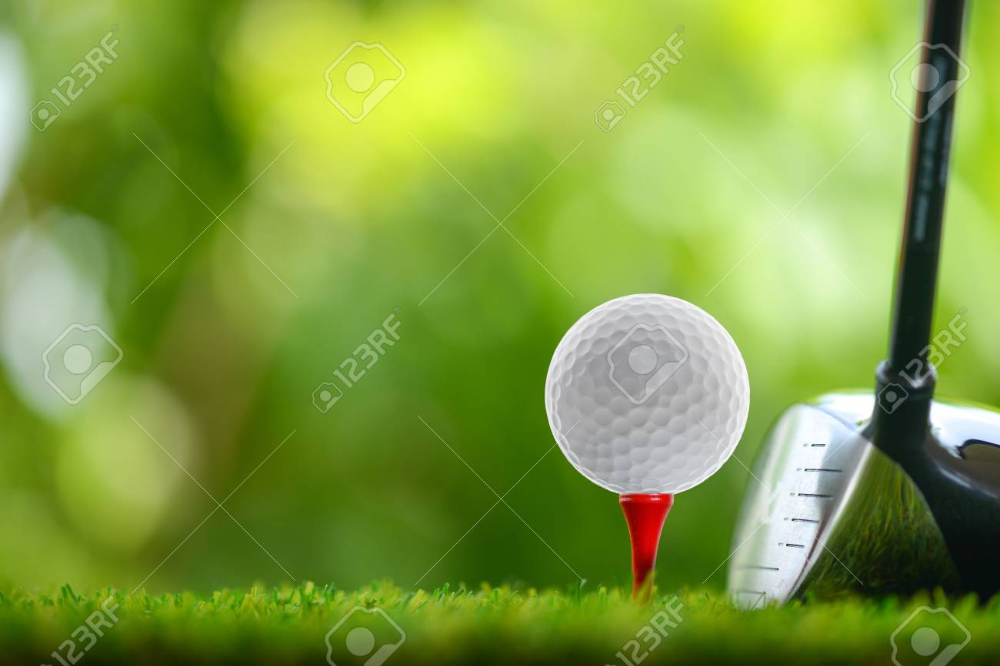

그대로들고 나가지, 말고 (밀어올려)
그대로들고 나가지, 말고 (밟아)
왼팔천천히 나가지, 말고 (밀어)
왼팔천천히 나가지, 말고 (꿀밤)
 GOLF란 ?
- 스윙이 아니고, 집중이며, 몰입이고, 습관이며, 전략이다.
SWING이란 ? - 제자리회전이며 하체로 휘두르며, 왼쪽에서 소리나게, 원을 그리는 것으로, 빨라지면서 지나치는 것이다 착한스윙이란 ? - 내몸에 어울리는 스윙으로, 스코어를 내기위한 수단으로서 스윙이다. 임펙트란 ? - 히팅이 아니라 다운스윙의 한 과정이다.( 과도한 힘을 자제하라. ) Putting ? : 등으로- 밟고 양팔을 몸에 붙이고, 왼등으로 백스윙, 오른등으로 다운스윙, 오른발바닦에 체중을 남긴다. 기준거리 퍼팅을 ( 10cm, 3m, 5발 / 60cm, 18m, 30발 ) 확보하라. 연습이란 ? - 샷의 경향을 파악하고, 집중과 몰입능력을 향상하는 것이다.